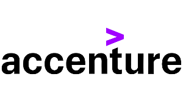

Experience
Solutions Architecture Intern
AWS (Virtual) — (June–Aug) 2025
- Engineered infrastructure blueprints for distributed multi-tier applications, emphasizing scalability, cost-efficiency, and resilience using AWS services.
- Assessed workload patterns and mapped optimal cloud resources (EC2, S3, RDS, Lambda) to business requirements, reducing operational overhead and improving performance.
- Analyzed production infrastructure trade-offs and documented technical justifications to achieve the best performance-to-cost ratio across deployments.

Software Engineering Intern
JPMorgan Chase & Co. (Virtual) — (Oct–Nov) 2025
- Architected a 5-module backend system using Java, Spring Boot, Apache Kafka, and H2 database to process real-time financial transactions with persistent data validation and balance reconciliation logic.
- Devised asynchronous event-driven architecture by consuming high-throughput Kafka message streams and integrating third-party incentive APIs via REST clients for real-time transaction enrichment and reward automation.
- Exposed RESTful endpoints using Spring Web MVC to query user balances with robust error handling and JPA-backed H2 persistence.

Solutions Architecture Intern
Accenture(Virtual) — (Aug) 2025
- Executed complete Software Development Lifecycle (SDLC) phases including requirements analysis, implementation strategies, QA processes, and Agile sprint cycles through hands-on simulations.
- Constructed and validated software modules using industry-standard coding conventions, design patterns, and peer-review methodologies to ensure code quality and maintainability.
- Applied sprint-based delivery frameworks and collaborative team practices, mastering structured software development workflows aligned with professional engineering standards.